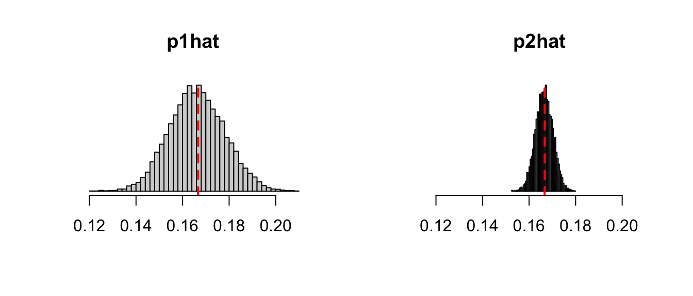
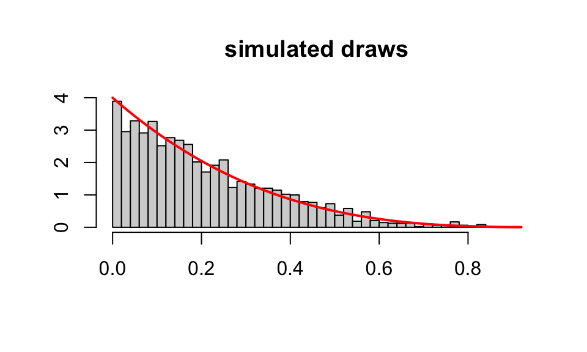
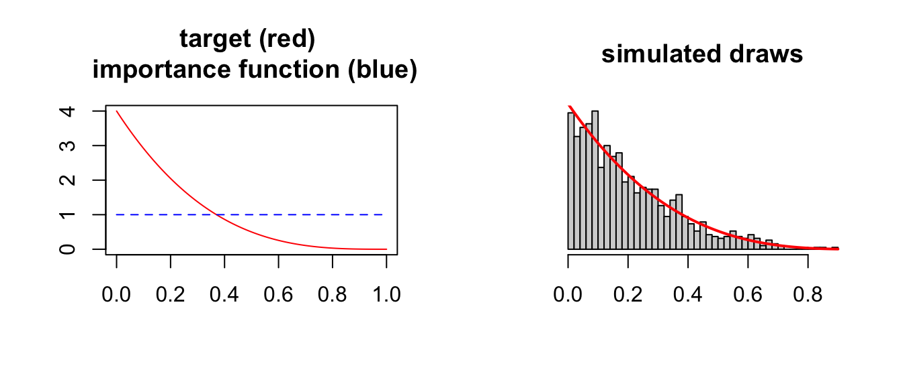
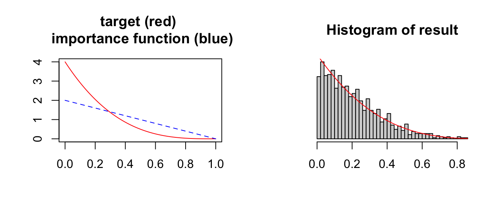
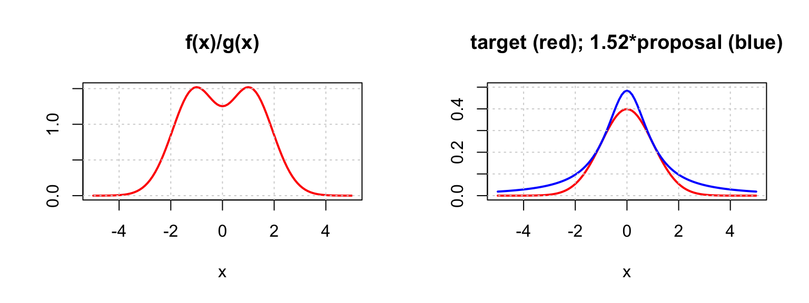
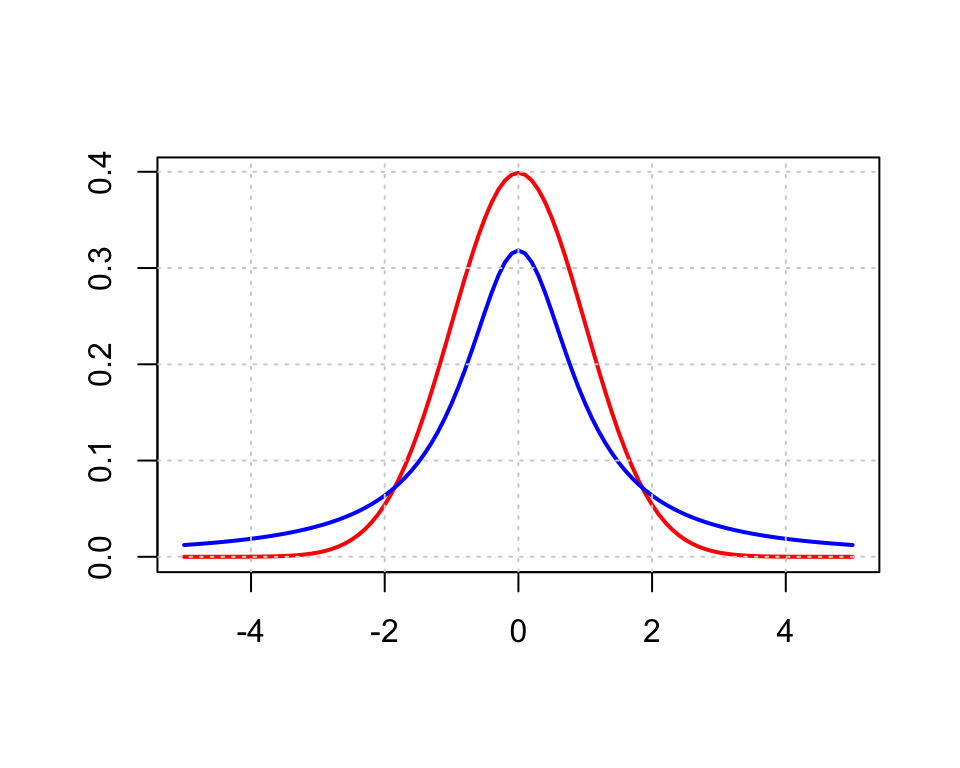
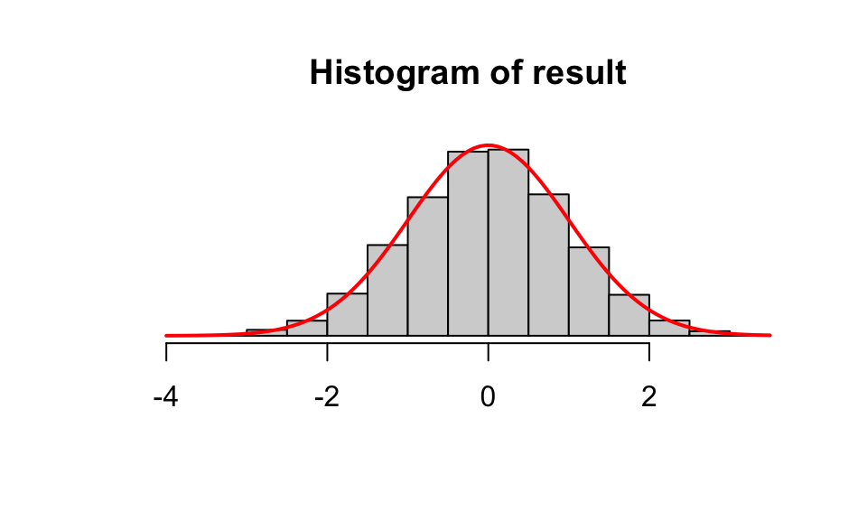
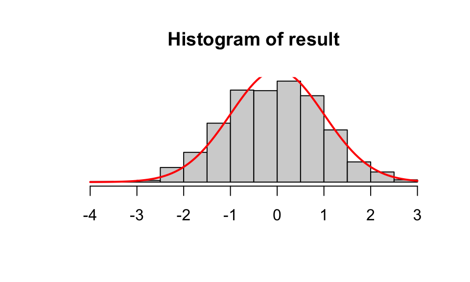

dice1 <- sample(c(1:6), size = 1000, replace = TRUE)
mean(dice1 == 1) # should be close to 1/6 = 0.1667[1] 0.154In class, we discussed the example of estimating the probability of rolling a 1 of a fair die using simulation. In this question, we will compare the estimates obtained with and without using importance sampling.
a. Simulate \(1000\) outcomes of a fair die. Report the proportion of 1’s as your estimate (we’ll call this estimator p1hat).
dice1 <- sample(c(1:6), size = 1000, replace = TRUE)
mean(dice1 == 1) # should be close to 1/6 = 0.1667[1] 0.154b. Estimate the standard deviation of p1hat (hint: run a for loop to repeat (a) for many times and record the values of p1hat each time; calculate the standard deviation of those values. In R, you can use sd( )). Also, estimate the probability that p1hat falls within the range \(\frac{1}{6}\pm 0.01\) (i.e., within 0.01 estimation error of the truth).
See (d).
c. Simulate \(1000\) outcomes of a new die, where the values 2,3,4 are recorded as 1’s. Calculate the importance weight. Report the proportion of 1’s and multiply it by the importance weight as your estimate (we’ll call this estimator p2hat).
The importance weight is calculated as \[\frac{f(1)}{g(1)} = \frac{P(1 | \text{old dice})}{P(1 | \text{new dice})} = \frac{1/6}{4/6}.\]
dice2 <- sample(c(1, 1, 1, 1, 5, 6), size = 1000, replace = TRUE)
mean(dice2 == 1) * (1 / 4)[1] 0.16d. Similar to (b), estimate the standard deviation of p2hat and the probability that p2hat falls within the range \(\frac{1}{6}\pm 0.01\). Briefly comment on how importance sampling improves the estimate.
nsim <- 10000
result1 <- rep(NA,nsim)
result2 <- rep(NA,nsim)
for(i in 1:nsim){
dice1 <- sample(c(1:6),size=1000,replace = T)
result1[i] <- mean(dice1==1)
dice2 <- sample(c(1,1,1,1,5,6),size=1000,replace=T)
result2[i] <- mean(dice2==1) * (1/4)
}
# compare SD's and proportions within 0.01 error range
sd(result1);sd(result2)[1] 0.01187306[1] 0.003730628mean( (result1 < 1/6+0.01)&(result1 >1/6-0.01) )[1] 0.5969mean( (result2 < 1/6+0.01)&(result2 >1/6-0.01) )[1] 0.992# compare histograms
par(mfrow=c(1,2))
hist(result1,xlim=range(result1),nclass=50,main="p1hat",xlab=NA,ylab=NA,yaxt='n')
abline(v=1/6,col='red',lty='dashed',lwd=2)
hist(result2,xlim=range(result1),nclass=50,main='p2hat',xlab=NA,ylab=NA,yaxt='n')
abline(v=1/6,col='red',lty='dashed',lwd=2)
Suppose we want to sample from the density function \(f(x)=4(1-x)^3, 0<x<1\). You can find sample code on Moodle (under Lecture 5 code) for the examples we did in class; you should be able to modify the code to do this question.
a. Use an acceptance-rejection sampling algorithm to sample from the target distribution, with a uniform proposal density and a constant \(C=4\). What is the mean of the simulated draws?
b. What is the acceptance rate of the simulation in (a)?
c. Graph \(f(x)\) on the computer and plot a histogram of your simulated draws to compare. They should look similar in shape.
target <- function(x){
result <- 4*(1-x)^3
result[x<0 | x>1] <- 0
return(result)
}
nsim <- 10000
result <- numeric()
for(i in 1:nsim){
prop <- runif(1)
acc.rate <- target(prop)/((4)*dunif(prop))
if(runif(1) < acc.rate){
result <- c(result,prop)
}
}
mean(result) #mean; should be close to 0.2[1] 0.2066233length(result)/nsim #acceptance rate; should be close to 0.25[1] 0.2403hist(result,nclass=50,prob=T,xlab=NA,ylab=NA,main='simulated draws')
curve(target(x),add=T,col='red',lwd=2)
d. Redo the sampling with a uniform proposal density but a different constant \(C\) of your choice. Verify your sample by calculating the mean of the sampled values and plotting a histogram. Briefly discuss your choice of \(C\) and how it affects the acceptance rate.
Similar to (a). The choice of \(C\) must be larger than \(f(0) = 4\) (max of the target distribution). The acceptance rate should be close to \(1/C\).
e. Redo the sampling with the SIR algorithm, using a uniform(0,1) density as the importance function. Verify your sample by calculating the mean of the sampled values and plotting a histogram.
target <- function(x){
result <- 4*(1-x)^3
result[x<0 | x>1] <- 0
return(result)
}
nsim.target <- 1000
nsim.initial <- nsim.target*10
candidates <- runif(nsim.initial)
weights <- target(candidates)/dunif(candidates)
result <- sample(candidates,size=nsim.target,replace=T,prob=weights)
mean(result) #should be close to 0.2[1] 0.20078par(mfrow=c(1,2))
curve(target(x),col='red',main="target (red) \n importance function (blue)",
xlab=NA,ylab=NA)
curve(dunif(x),col='blue',add=T,lty='dashed')
hist(result,nclass=50,prob=T,xlab=NA,ylab=NA,yaxt='n',main='simulated draws')
curve(target(x),add=T,col='red',lwd=2)
f. Redo the sampling with the SIR algorithm, using a beta(1,2) density as the importance function. Verify your sample by calculating the mean of the sampled values and plotting a histogram.
nsim.target <- 1000
nsim.initial <- nsim.target*10
candidates <- rbeta(nsim.initial,shape1=1,shape2=2)
weights <- target(candidates)/dbeta(candidates,shape1=1,shape2=2)
result <- sample(candidates,size=nsim.target,replace=T,prob=weights)
mean(result) #should be close to 0.2[1] 0.2065179par(mfrow=c(1,2))
curve(target(x),col='red',main="target (red) \n importance function (blue)",
xlab=NA,ylab=NA)
curve(dbeta(x,shape1=1,shape2=2),col='blue',add=T,lty='dashed')
hist(result,nclass=50,prob=T,xlab=NA,ylab=NA,yaxt='n')
curve(target(x),add=T,col='red')
Suppose we want to sample from the density function \(f(x)=\frac{1}{\sqrt{2\pi}}e^{-x^2/2}, \quad -\infty<x<\infty\) (this is a normal density, but pretend we don’t know that). We want to use an acceptance-rejection algorithm with the proposal density given by the Cauchy distribution (in R, you can use functions dcauchy(), rcauchy() etc. as usual; recall that the density function \(g()\) is given by dcauchy()). The following plot shows the target density (in red) and the proposal density (in blue). Both distributions center at 0.
target <- function(x){
result <- 1/sqrt(2*pi)*exp(-x^2/2)
return(result)
}
curve(target(x),xlim=c(-5,5),col='red',ylab=NA,lwd=2,xlab=NA)
curve(dcauchy(x),add=T,col='blue',lwd=2)
grid()
a. Discuss what values of \(C\) would work for the acceptance-rejection algorithm.
If we plot \(f(x)/g(x)\), we can see that the maximum occurs around 1 and -1. Using R we can approximate the maximum to be around \(1.52\), so the choice of C should be bigger than this value.
x <- seq(from=-5,to=5,by=0.01)
max(target(x)/dcauchy(x)) # to approximate the max[1] 1.520347par(mfrow=c(1,2))
curve(target(x)/dcauchy(x),xlim=c(-5,5),col='red',ylab=NA,lwd=2,
main="f(x)/g(x)")
grid()
curve(target(x),xlim=c(-5,5),col='red',ylab=NA,lwd=2,ylim=c(0,0.5),
main="target (red); 1.52*proposal (blue)")
curve(1.52*dcauchy(x),add=T,col='blue',lwd=2)
grid()
b. If we use \(C=2\) and want to obtain around \(1000\) values, how many values should we propose?
The acceptance rate should be around \(1/2=0.5\), so we should propose around \(2000\) values.
c. If we use \(C=2\), what are the acceptance rates of the following \(5\) proposed values? Briefly comment on what kind of values are more likely to be accepted.
[1] 1.1025199 2.3538306 -4.2926262 -0.2966426 0.7346469Each acceptance rate is calculated as \(\frac{f(x)}{C \cdot g(x)}\). Values where \(f(x)\) is large (relative to \(g(x)\)) are more likely to be accepted.
value <- c(1.1025199, 2.3538306, -4.2926262, -0.2966426, 0.7346469)
acc.rate <- target(value)/((2)*dcauchy(value))
round(data.frame(value,acc.rate),3) value acc.rate
1 1.103 0.756
2 2.354 0.257
3 -4.293 0.001
4 -0.297 0.652
5 0.735 0.737
d. Run the acceptance-rejection algorithm to sample from the target distribution with your choice of \(C\). Verify the sampled values by calculating the mean (should be close to \(0\)) and plotting a histogram to compare to the target distribution.
# rejection algorithm with C=2
nsim <- 10000
result <- numeric()
for(i in 1:nsim){
prop <- rcauchy(1)
acc.rate <- target(prop)/((2)*dcauchy(prop))
if(runif(1) < acc.rate){
result <- c(result,prop)
}
}
mean(result) #mean: should be close to 0[1] -0.008231698length(result)/nsim #acceptance rate: should be close to 1/C[1] 0.5013hist(result,nclass=20,probability=T,xlab=NA,ylab=NA,yaxt='n')
curve(target(x),add=T,col='red',lwd=2)
e. We now use SIR to sample from the target distribution with the Cauchy density as the importance function. This is especially suitable because the Cauchy density has much heavier tails than the target distribution. Calculate the importance weights for the \(5\) proposed values given in (c). Briefly comment on what kind of values are more likely to be resampled.
The importance weight for each value is calculated as \(\frac{f(x)}{g(x)}\). Values where \(f(x)\) is large (relative to \(g(x)\)) are more likely to be resampled.
value <- c(1.1025199, 2.3538306, -4.2926262, -0.2966426, 0.7346469)
weight <- target(value)/(dcauchy(value))
round(data.frame(value,weight),3) value weight
1 1.103 1.512
2 2.354 0.514
3 -4.293 0.002
4 -0.297 1.305
5 0.735 1.473f. Run the SIR algorithm to obtain \(1000\) simulated values from the target distribution. Verify the sampled values by calculating the mean and plotting a histogram.
nsim.target <- 1000
nsim.initial <- nsim.target*10
candidates <- rcauchy(nsim.initial)
weights <- target(candidates)/dcauchy(candidates)
result <- sample(candidates,size=nsim.target,replace=T,prob=weights)
mean(result) #should be close to 0.5[1] -0.0716877hist(result,nclass=20,probability=T,xlab=NA,ylab=NA,yaxt='n')
curve(target(x),add=T,col='red',lwd=2)